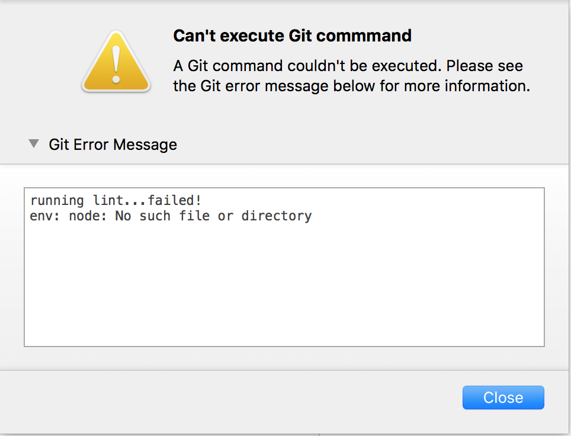

本文目錄：
情況：
在 Tower 裡面提交 commit 時會跳出環境錯誤，無法執行 lint。

在專案的 package.json 裡面 lint 的內容是：
"scripts": {
"lint": "eslint -c .eslintrc src server api spec"
}
在 command line 進行 commit，或是直接執行 eslint 都可以跑得起來。我猜可能是 PATH 之類的設定有問題吧但我跟 Unix 系統實在不熟完全不知道要檢查哪裡 QQ
※ 註：其實直接執行 eslint 或跑 npm global 的 eslint，然後就找不到plugin... 要把指令加上路徑 node_modules/.bin/ 也就是跑 node_modules/.bin/eslint -c .eslintrc src server api spec 指定跑 local 的 eslint 才可以 不知道怎麼讓 npm 預設去找local的 Orz
解決方法一：更換 Git binary（失敗）
寫信去 Tower 官方，回覆是說：
Please try changing the Git binary used by Tower. You can do so by opening Tower's preferences on the "Git Config" tab. There, you should try using the system binary
/usr/bin/git.
我才因此知道原來可以指定跑電腦裡那個 Git XD
不過這沒有解決上面的問題，我原本就是用 mac 內建的 Git，就算換成用 homebrew 灌的 'usr/local/bin/git' 或 Tower 內建的 Git 都一樣 Orz
解決方法二：從 terminal 開 Tower（成功）
在網路上搜尋錯誤訊息時找到這個討論串：
SourceTree : Hook failing because paths don't seem to be set correctly
SorceTree 是另一個在 MAC 上有 GUI 的 Git 軟體，看起來錯誤訊息也都一樣，所以就姑且抱著死馬當活馬醫的心態，在 iTerm2 上執行類似的指令：
open /Applications/Tower.app/Contents/MacOS/Tower
結果就可以正常的跑 lint 了哦哦哦！（雖然還是不知原理為何…）
或是在 Tower 的 Preference -> Intergration 裡面點選安裝 Tower command line utility，就可以從 command line 執行 ：
gittower <git_repository_path>
（ <git_repository_path> 是你的專案資料夾路徑）